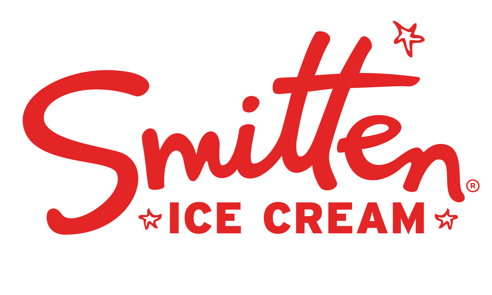

Robyn Sue Fisher - Founder of Smitten Ice Cream

Smitten Ice Cream is reengineering ice cream from the ground up!

COOKIE DOUGH W/ PRETZELS & CHOCOLATE CHIPS
Hand-chopped pretzels like WOAH add a salty crunch to made-from-scratch cookie dough pieces studded with teensy Guittard Chocolate chips.
And before you get all salmonella-panicky on us, fret not – there’s no egg yolk to be found here. These buttery chunks of cookie dough are mixed into a malted brown sugar ice cream base made from milk and cream, and churned fresh. (try not to drool.)
You’ll be swooning over your scoop if you check out the “Dough My Goodness” sundae – double the cookie dough means double the sugar rush, so just promise us you won’t get too cray cray.
Learn More About Smitten Ice Cream!
By Juliette